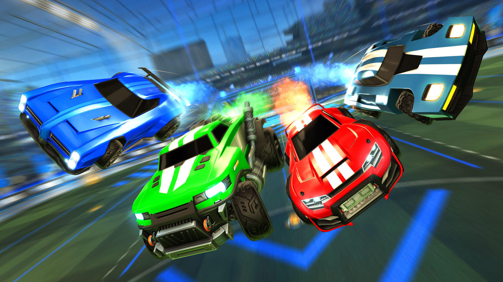

Ever since I was 10 years old and got a letter back from R.L. Stine, I've loved to collect autographs through the mail. Basically, I'd write a letter to a celebrity, ask them to autograph a picture or a card that I included, and I'd include a stamped envelope for them to mail the autograph back. I've amassed hundreds of (mostly basketball cards) autographs this way.
When I was young, I never really got to play video games like other kids. That's not necessarily a bad thing, but it made me appreciate the games I did have as a child, like the old Pokemon games I had for my Gameboy. These evolved in to the games I played now on Xbox like Rocket League or Call of Duty.

Much like video games, I didn't reallt get to experience much music until my teens. Because of this, though, my taste in music is very much my own. I love to listen to alternative rock bands such as Awolnation, Queen, and Jefferson Starship. I also enjoy rap music by artists like Childish Gambino, Tech N9ne, and Eminem.